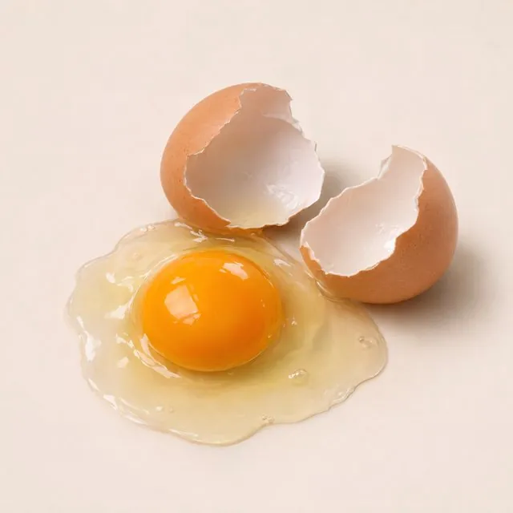
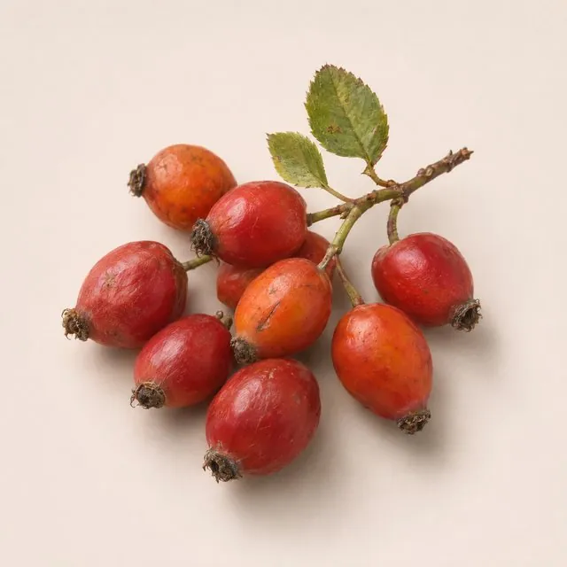
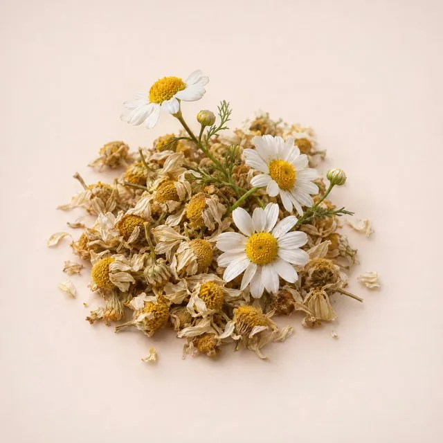
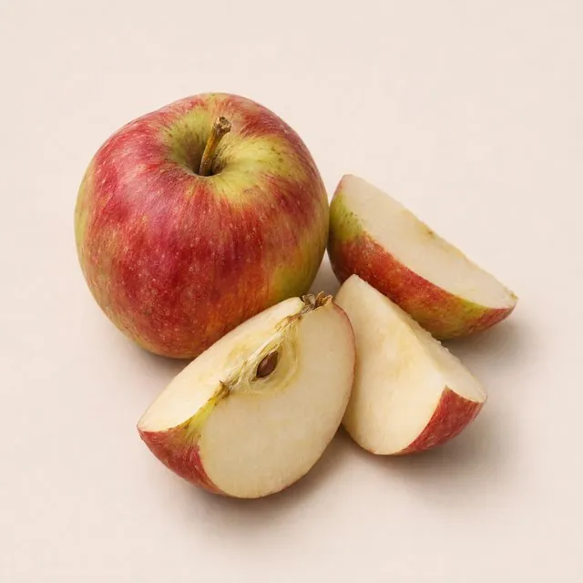
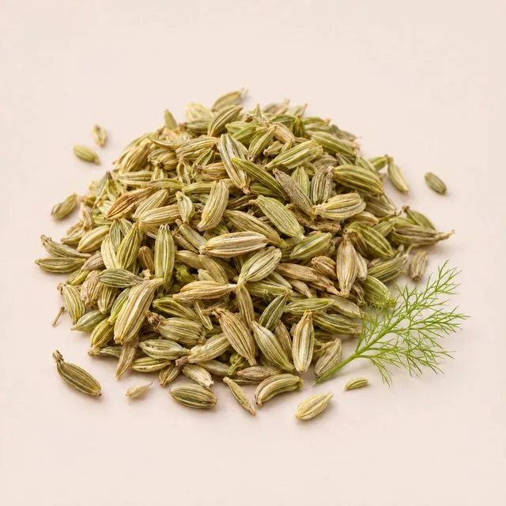
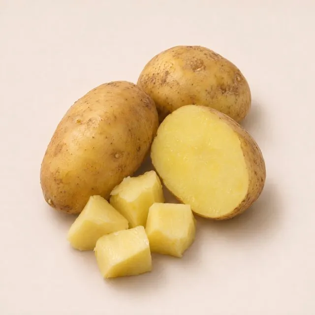
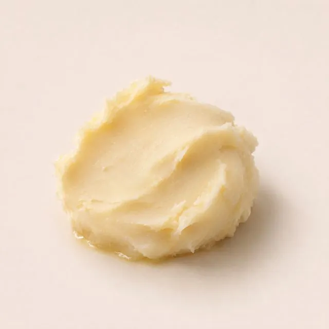
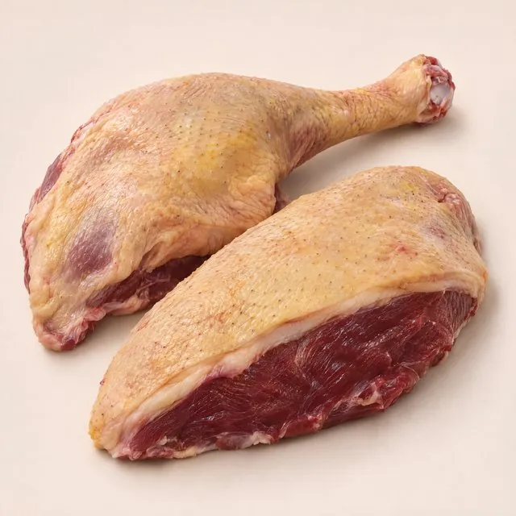
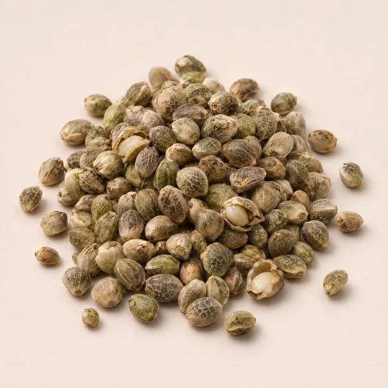
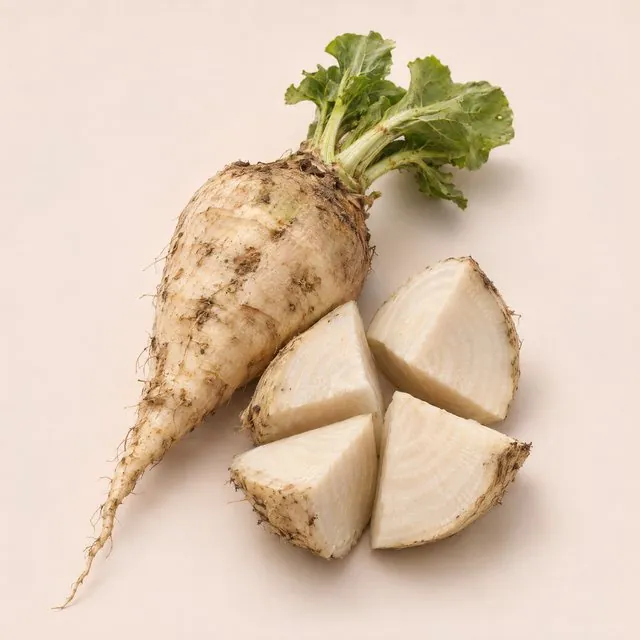

Suroviny
To najlepšie do misky.
Nehľadáme najlacnejšiu cestu k plnému vrecku. Hľadáme suroviny, ktoré majú v miske zmysel. Z nich potom vyberieme granule presne pre tvojho psa.
Mäso zo Slovenska
Bez GMO

0 %
GMO
01. Suroviny
Ingrediencie, čo budeš závidieť.
Žiadne „mäso a mäsové deriváty“. Každá surovina má meno.
 Jeleň
Jeleň Tekvica
Tekvica Čučoriedky
Čučoriedky
Vajcia Jahňacie
Jahňacie Hliva ustricová
Hliva ustricová Pestrec mariánsky
Pestrec mariánsky Lososový olej
Lososový olej Kačka
Kačka
Šípky Gaštany
Gaštany
Harmanček Batáty
Batáty Jelení loj
Jelení loj
Jablko
Fenikel Králik
Králik
Zemiaky Bravčový tuk
Bravčový tuk Pivovarské kvasnice
Pivovarské kvasnice Hovädzie
Hovädzie Ryža
Ryža
Kačací tuk Maliny
Maliny Rozmarín
Rozmarín Yucca
Yucca Humínové látky
Humínové látky Mrkva
Mrkva Ľan
Ľan Kolagén
Kolagén
Hus
Konopné semiačka Glukozamín
Glukozamín Morka
Morka Špenát
Špenát Chondroitín
Chondroitín Petržlen
Petržlen
Repa
02. Čo vynechávame
A čo tam nenájdeš.
- „Mäso a mäsové deriváty“ bez mena
- Pšenica, kukurica a sója ako lacná výplň
- Jedno vrecko pre všetkých psov
- Dávku „od oka“